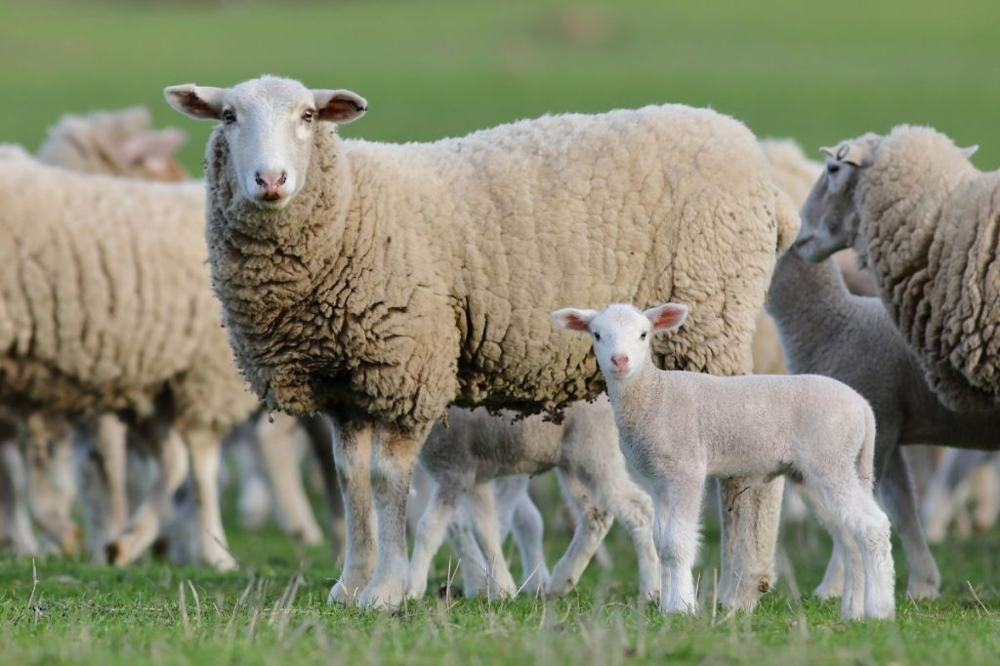

Горите в България
Загубата на местообитания, изменението на климата и липсата на биологично разнообразие могат да направят екосистемите нездравословни, излагайки дивата природа на по-голям риск от болести. Всеки ден страничните продукти от нашето ежедневие могат да станат замърсители.

Подобно на хората, животните или умират поради събития, или от нещо, което го убива, или от болест, или от старост.
Подобно на хората, телата им се изваждат от мястото, където са намерени, или заровени, или изгорени, или в противен случай, ако останат необезпокоявани, те изгниват в земята.
Kогато даден вид стане застрашен, това е знак, че екосистемата бавно се разпада. Всеки вид, който е загубен, предизвиква загуба на други видове в своята екосистема. Хората зависят от здравите екосистеми, за да пречистят околната среда. В българия има около 450 вида застрашени животни.
Всяка година биват убивани около 150 милиарда животни.